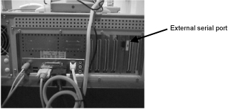
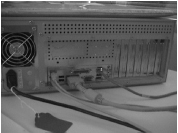
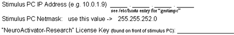
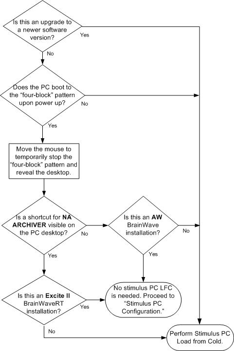
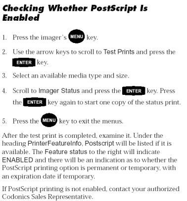

Operating Documentation
Direction 5440001-3, Rev# 6
Signa HDxt Service Methods
Module Version 3.0, Version Date 11/3/09
Operating Documentation |
This manual describes software installation and system configuration for the following products:
| Generic Product Name | Associated Catalog Number(s) |
|---|---|
| BrainWave on AW4.0 | M10331BR - BrainWave AW4.0 license Operator manual:
|
| BrainWaveSO on AW4.0 | M10331BZ - BrainWaveSO AW4.0 license: RTIP option is a prerequisite. |
| Full BrainWave Hardware Option Stimulus PC (Legacy) | M1033BM - Stimulus PC plus magnet room audio, visual and patient
response hardware:
|
| BrainWave Hardware Lite Stimulus PC | M1033BL - Stimulus PC plus Magnet Room patient response hardware:
|
| BrainWave Hardware Lite Stimulus PC for 14.x Systems | M3335MJ - Stimulus PC plus magnet room patient response hardware: Compatible with BrainWaveRT (M3335KR). |
| ||||
With the release of 14.x software or HDx, a new Stimulus PC is needed for the BrainWave option.
BrainWaveRT (M1033BT) and BrainWavePA (M1033BS) installations are not addressed in this document. These Excite II scanner-based options are installed via the standard Guided Install process.
An AW4.0 system may have either BrainWave or BrainWaveSO installed, but not both.
When loading a new version of AW4.0 BrainWave or BrainWaveSO, be sure to run the uninstall procedure first. (See Step 2 in Section 8.4.1 ).
If reinstalling or upgrading:
Excite II scanner software,
AW4.0 software, or
BrainWave stimulus PC software,
be sure to save customer-developed paradigms first, or this information will be lost. (Refer to the appropriate procedure in Section 4.1.3, Section 8.1.4, or Section 9.1.4.)
BrainWave application software is found on CD 5110767. BrainWaveSO application software is found on CD 2337089.
| Scanner Software | AW Software | RTIP Software |
| cnv4.283B_M4_0140.c | AW 4.0.x | 2271261-4 |
| + Protocols Patch 2328352, rev 1 | ||
| + Patch_CNV4_M4_08 / RTIP 020529 | ||
| 9.1_M3 or later | AW 4.0.x | 2271261-8 |
| vh3_M4 or later (3T Eclipse) | AW 4.0.x | 2271261-8 |
| 10.0_M4 or later (MGD/Excite) | AW 4.0.x | 2271261-8 |
Both BrainWave Hardware options (M1033BM and M1033BL) are compatible with BrainWave on AW4.0 (M10331BR) and BrainWaveRT (M1033BT). In all combinations, the Stimulus PC application software is contained on CD 5110767. Both the AW and Stimulus PC applications are delivered on this same CD. (The PC platform CD is separate.)
| Stimulus PC Hardware | Stimulus PC Platform Software |
| 2303343-2 | 2303343-6 |
| 2303343-14 | 2303343-11 |
| 2394034-2 | 2394034-3 |
| 5158764 | 5158765 |
| 5173371 | 5173558 |
| ||||
| The PC platform software revisions are tied to specific PC hardware parts as listed in the above table. The following assemblies consist of the appropriate pairings of Stimulus PC hardware and platform software. The stimulus PC application software runs correctly on both assemblies listed below. | ||||
| PC + Platform SW Assembly | Possible Components | |
| 2303343-12 (FRU) | Either | 2303343-2 (PC) + 2303343-6 (SW) |
| -or- | 2303343-14 (PC) + 2303343-11 (SW) | |
| 2309434-4 (FRU) | Either | 2303343-2 (PC) + 2303343-6 (SW) |
| -or- | 2303343-14 (PC) + 2303343-11 (SW) | |
| -or- | 2394034-2 (PC) + 2394034-3 (SW) | |
To determine PC type, check for an external serial port on the back of the PC. If there is an external serial port, the part number of the PC is either 2303343-14 or 2394034-2. (See Illustration 1.)
Illustration 1: Part Number 2303343-14 or 2394034-2

If the PC does not have the external serial port, it is the old PC or P/N 2303343-2 shown in Illustration 2.
Illustration 2: Part Number 2303343-2

From this point on, this procedure consists of four different subsections for each of the following configurations:
Section 4 BrainWave on Excite-based systems with BrainWave Hardware
Section 7 BrainWave on Excite-based systems without BrainWave Hardware
Section 8 Lx Scanner with AW4.0 BrainWave
Section 9 Lx Scanner with AW4.0 BrainWaveSO
Step-by-step instructions are provided for subsequent procedures. Each step is presented in two ways, Advanced Users and New Users. Key pieces of information and operator actions are highlighted in bold for quick and easy execution.
| ||||
| This section does NOT apply to Excite systems on release 14.x. (See Section 5 for a 14.x system.) | ||||
This section covers systems with the following configuration:
Excite II Scanner: Software 11.x, G3_M4 or 12.x
BrainWaveRT Scanner Option: Catalog M1033BT
BrainWavePA Scanner Option: Catalog M1033BS (optional)
BrainWave Hardware Option: BrainWaveHW, M1033BL
Record the information in the appropriate area in either Section 8.1.3 or Section 9.1.3.
Check that the following scanner license keys are installed or available depending on the options purchased on the Linux PC. These keys are installed using the standard option installation process.
brnwvrt: Catalog M1033BT - BrainWave Real-Time Acquisition
brnwvpa: Catalog M1033BS (Optional) - BrainWave Post Acquisition
brnwvhw: Catalog M1033BL - BrainWave Hardware Lite
Locate the license key (NeuroActivator-Research) for the Paradigm Development application on the Stimulus PC. This Stimulus PC-specific key is part of Catalog M1033BL and will often be found on a label attached to the BrainWave Stimulus PC.
Record the information for the Stimulus PC below: 
If upgrading or reloading either Excite II scanner software or the Stimulus PC associated with the BrainWave Hardware option, be sure to save the configuration data and any customer-developed paradigms before reloading software. The customer-generated paradigms are located in the research directory on the Stimulus PC.
| Advanced Users | New Users |
|---|---|
| Service → Utilities → Paradigm Manager → Start | Launch the Paradigm Manager from the Utilities menu within the Service Desktop on the Excite II Scanner console. |
| Hardware Paradigms | Select the Hardware Paradigms tab. |
| Open window and right click to exit NeuroActivator-Clinical. | Press the [Open Window to Stim PC] button, right-click on the NeuroActivator-Clinical icon that displays on the taskbar (lower right corner of screen), and select [Exit]. |
| NeuroActivator-Archiver | Launch the NeuroActivator-Archiver. Use the Save function to copy paradigm information (into a .zip file) from the Stimulus PC to the Excite II Scanner, where it will be accessible to SaveInfo. |
| File → Exit. | Exit NeuroActivator-Archiver. |
| NeuroActivator-Clinical | Relaunch NeuroActivator-Clinical using the desktop shortcut. Verify that the four-block pattern returns once the mouse is outside the Stimulus PC window. |
| SaveInfo. | Perform the standard SaveInfo function on the Excite II Scanner to insure all custom paradigm and configuration data has been saved. |
The Stimulus PC should normally arrive preloaded with both platform and application software compatible with an Excite II scanner. Perform the checks in Illustration 3 to determine if reloading the Stimulus PC is necessary:
Illustration 3: Stimulus PC Load

These steps load a fresh image of the Stimulus PC operating system on the disk. At this time, the platform consists of Windows NT Version 4 with Service Pack 6. Refer toSection 2.2 to determine software needed for the Stimulus PC.
| Advanced Users | New Users |
|---|---|
| Insert PC platform CD-ROM. | 1. The CD may have one of several labels depending on the PC
part number (explained in Section 2):
|
| Start → Shutdown (with auto restart). | 2. Shut down the PC by selecting: Automatic Restart. |
| Autoload occurs. | 3. The system will auto boot from the CD and load the software. Wait a few minutes until the following message displays, The software installation is complete. Please remove the CD and reboot. |
| Remove CD. | 4. Remove the CD from the CD-ROM drive. |
| <Ctrl> - <Alt> -< Delete> | 5. Press the <Ctrl>, <Alt> and <Delete> keys simultaneously to reboot the PC. The PC will boot all the way to the standard start screen with no additional operator intervention (i.e., no login required). |
VNC is the software application that permits remote display of the Stimulus PC environment from either the AW (for BrainWave) or the scanner console (for BrainWaveRT plus the BrainWave Hardware option).
| Advanced Users | New Users | |
|---|---|---|
| Insert BrainWave CD-ROM. | 1. Insert the BrainWave application CD 5110767 into the Stimulus PC's CD-ROM drive. | |
| Windows Explorer. | 2. Start Windows Explorer from the Start menu. | |
| Select VNC. | 3. Use NT Explorer to go to the <CD-ROM drive>:/VNC directory. | |
| Setup.exe | 4. Double click Setup.exe or Setup icon. | |
| [OK] | 5. Click [OK] in the Warning dialog box. | |
| [Next] | 6. Click [Next] in the Welcome dialog box. | |
| [Yes] | 7. Click [Yes] in the SLA dialog box. | |
| [Next] | 8. Click [Next] to leave the default destination folder. | |
| [Next] | 9. Click [Next] to leave the default Program Folder entry. | |
| [Finish] | 10. Click [Finish]. The system may automatically reboot at this point. | |
| Install WinVNC Service. | 11. Start → Programs → VNC → Administrative Tools → Install WinVNC Service. | |
| [OK] | 12. Click [OK] in the Confirmation of Service Installation box. (This will disappear automatically after a few seconds.) | |
| Start WinVNC Service. | 13. Start → Programs → VNC → Administrative Tools → Start WinVNC Service. (If an error occurs, return to Step 11 and reinstall.) | |
| [OK] | 14. Click [OK] in the Warning dialog box. | |
| Password = neuroactivator | 15. Type: neuroactivator in the password field. (This password must be used.) | |
| [OK] | 16. Click [OK]. |
The following instructions are used to load Stimulus PC application software (NeuroActivator-Clinical, NeuroActivator-Research and NeuroArchiver).
| Advanced Users | New Users |
|---|---|
| Insert BrainWave CD-ROM. | 1. Insert BrainWave 1.x application CD 5110767 if not already done. |
| TRIPLE Check. | WARNING: Pay close attention to the next step. The BrainWave application CD supports multiple configurations. The instructions below MUST be followed exactly. |
| Use NT Explorer to find: BrainWaveRT_on_Scanner and double click. | 2. Use NT Explorer to select folder: <CD-ROM drive>:/BrainWaveRT_on_Scanner. Double click on this folder to view all the contained files. |
| Find Setup.exe and double click. | 3. In the folder selected previously, an icon labeled Setup or Setup.exe should display. Double click this icon to launch the NeuroActivator Installation Wizard. |
| [Next] | 4. Quickly read the material on the first page of the Installation Wizard, then click on the [Next] button at the bottom of the page. |
| [Next] | 5. The next page allows a choice of the folder in which to install NeuroActivator. [Accept] the default location, then click on the [Next] button. |
| Select all components [Next], [Next]. | 6. Ensure all components on the Select Components menu are selected. Click the [Next] button and the second [Next] button to proceed with the installation. (A status bar will fill from 0% to 100% as installation runs to completion.) |
| [Finish] | 7. On the final page, click the [Finish] button to exit the Installation Wizard. |
| Start → Programs → NeuroActivator → NeuroActivator-Research. | 8. Activate the BrainWave paradigm editor application, NeuroActivator-Research. |
| Record Host ID. | 9. Record the Host ID: _________________________. |
| Find license key. | 10. The application license key for NeuroActivator-Research
should have been shipped with the BrainWave hardware option.
|
| Type license key. | 11. Type the license key. If key was entered successfully, a window should display labeled Untitled NeuroActivator in the upper left corner. |
| Exit. | 12. Exit the NeuroActivator-Research version. |
| Remove CD-ROM. | 13. It is safe to remove the installation CD at this point. |
This step is required and should be the last step of the stimulus PC software installation process.
| Advanced Users | New Users |
|---|---|
| Exit NeuroActivator-Clinical. | 1. Right-click on the NeuroActivator icon (black icon with an outline of a head located in lower right hand corner of monitor) and select Exit. |
| Insert Security Patches CD-ROM. | 2. Insert the BrainWave Stimulus PC Security Patches CD 5110968. |
| Start → Windows Explorer. | 3. Open Windows Explorer and select the folder for the CD-ROM drive. (Two files should be visible on this CD.) |
| Double click NT_Patch_WB_. | 4. Execute the Worm-Blaster virus patch executable: NT_Patch_WB_Q823980i.exe. |
| Remove CD and [OK]. | 5. Remove the Patch CD-ROM, and click the [OK] button to reboot the PC. |
| Repeat Steps 1-5 for NT_Patch_RPC_. | 6. Repeat Steps 1 through 5 for the NT_Patch_RPC_K8824146.exe RPC virus patch. |
The same basic instructions are used to configure the Stimulus PC for both of the following configurations.
| Advanced Users | New Users |
|---|---|
| Exit NeuroActivator. | 1. Move the mouse to dismiss the flashing square. Right-click on the NeuroActivator icon (image of the brain in the lower right corner of the taskbar), and click Exit. |
| Start → Settings → Control Panel → Network. | 2. Start → Settings → Control Panel and double click the Network icon. |
| Protocols | 3. Select the Protocols tab. |
| Select TCP/IP. | 4. Select the TCP/IP protocol. |
| [Properties] | 5. Click the [Properties] button. |
| IP Address: <gestimpc IP addr> Subnet Mask: 255.255.252.0 Default Gateway: <leave blank> | 6. From the Tools desktop of the scanner workstation, open
a C-shell.
|
| [OK] | 7. Click [OK] in the TCP/IP Properties dialog box. |
| [OK] | 8. Click [OK] in the Network dialog box. |
| Advanced Users | New Users |
|---|---|
| Start → Programs → Window Explorer. | 1. Use NT Explorer to find and select folder: c:\ProgramFiles\Sensor Systems, Inc.\NeuroActivator 1.x. |
| Launch NeuroActivator_Config.exe. | 2. In the NeuroActivator folder, double click on: NeuroActivator_Config.exe to invoke the configuration program. (The program asks for information about the Host Name, IP Address of the host, Port (i.e., the network connection to the BrainWave console), and the local folder path on the PC where the stimulus program will store log files for data acquisition sessions.) |
| Host Name: <site_hostname>-tgate; IP Address: <tgate-IP_address> | 3. Enter the Host Name and IP Address of the Excite II network. |
| Set port to 3000. | 5. Set the port value to 3000. (This value must match the port setting used later when performing BrainWave host configuration, either BrainWave on AW4.0 or BrainWaveRT on Excite II.) |
| [Accept] default and click Save. | 6. [Accept] the default location for the log files, c:\StimulusLogFiles. Click the Save option in the File menu. |
| Reboot?: [Yes] and Exit. Confirm the “four-block” pattern displays. | 7. After clicking the Save option in
the File menu, a dialog box displays asking whether
to reboot the PC when it exits.
For proper functioning of the BrainWave system, NeuroActivator-Clinical must be running and the flashing box displayed.* *To gain control of the system, exit NeuroActivator by right clicking the NeuroActivator icon (black background with outline of a head in profile) in the system tray, visible in the lower right corner of the screen on the taskbar. In the pop-up, select Exit to stop the NeuroActivator application. |
| NOTE: | This section does not apply to Excite systems with 11.x, 12.x or G3 software. (SeeSection 4 for these software revisions.) |
| ||||
| It is not necessary to load software for BrainWave with HDx Series (14.x or 15.x). Network configuration is the ONLY process needed for a 14.x system. | ||||
| NOTE: | The ping command cannot be used to
verify communication unless the firewall on the Stimulus PC is disabled.
To disable the firewall:
|
On the Signa Host, record the IP address of the gestimpc by doing the following:
Open a C-shell.
Type cd and <Enter>.
Type more hosts and <Enter>.
Record the IP address of the gestimpc: _______________________.
On the BrainWave Stimulus PC, move the mouse to the lower left section of the display, and select [Start], Control Panel and Network Connections.
Double click on Local Area Connection.
Click on Properties.
Double click on Internet Protocol (TCP/IP).
Select Use the following IP Address option.
.Enter the IP address that is associated with the gestimpc (usually 10.0.1.9).
Enter Subnet Mask of 255.255.252.0
Enter Default Gateway of 10.0.1.1
Click on [OK].
Click on [OK].
Click on [Close].
Open a C-shell on the Host. Type cd /usr/g/brainwave/config<Enter>.
Type: more BrainWave.config<Enter>.
Verify that the first line of the BrainWave.config file contains the address of the Stimulus PC. It is usually 10.0.1.9. If the file does not contain the address of the Stimulus PC, use gedit to modify the file.
From a C-shell type: gedit BrainWave.config and <Enter>.
Place cursor over the first line and delete all characters.
Enter the address of the gestimPC into the first line. Examples:
10.0.1.9
3000
0.0
Reboot both the Stimulus PC and the Host to allow communication between both.
| NOTE: | For Excite 12.x, 14.x or 15.x, see Section 6.2. |
Below is the procedure for installing the Codonics Horizon/PostScript printer for use with BrainWave PA on an Excite 11.x or G3 system.
Determine if Codonics Horizon/PostScript printer was already installed:
Type: lpq -s.
Check what displays: horizon-cvp@t18 0 jobs (dest 7.a-cvp@horizon). If the Codonics Horizon/PostScript does not appear in the output list, proceed to Step 2.
Install the Codonics Horizon/PostScript printer.
| NOTE: | Before beginning, obtain the Host Name and IP Address of the printer from the site's network administrator or the Codonics Horizon Imager User's Manual. |
To view printer network settings:
Type: su.
For Password, type: root.
For [root@t18]#, type:~sdc/install/install.printer. The following displays: Installing hard copy device driver.
When Is there a postscript printer available for your Workstation (y/n): displays, type y.
When Host name of the color printer: displays, type the printer host name.
When Internet (IP) address of the color printer: displays, type the printer IP Address.
When Remote queue name (for Horizon), otherwise use the default (lp): displays, type 7.a-cvp.
When Starting lpd: [OK] displays, click [OK].
Finally, these messages will display:
<...intermediate output deleted for clarity>
Printer installation completed.
| NOTE: | The remote queue name 7.a-cvp is specific to the Codonics Horizon Imager. |
Verify the ability to print motion correction plots and Visualizer images from BrainWave PA.
If unable to print to the Codonics Horizon Imager from BrainWave PA, the PostScript feature may not be enabled. Consult the Codonics website at: http://www.codonics.com, click on the Horizon icon and find the related literature for the Codonics printer at your location. (The pertinent section is shown in Illustration 4.)
Illustration 4: Codonics Horizon Imager PostScript Technical Brief

For information on how to install a printer on a 12.x, 14.x or 15.x system, refer to Installing Codonics Printer for BrainWave or SAGE.
This section covers systems with the following configuration:
Excite II Scanner: Software 11.0_M4 or G3_M4
BrainWaveRT Scanner Option: Catalog M1033BT
BrainWavePA Scanner Option: Catalog M1033BS (optional)
Check that the following scanner license keys are installed or available depending on the options purchased. These keys are installed using the standard option installation process.
brnwvrt - Catalog: M1033BT, BrainWave Real-Time Acquisition
brnwvpa - Catalog: M1033BS (optional), BrainWave Post Acquisition
If software is being reloaded or upgraded, the only pre-installation activities will be saving any software paradigms the user may have created, and properly configuring the system to support postscript printing if an appropriate printer is available.
BrainWaveRT on Excite II
If upgrading or reloading the Excite II scanner software, be sure to save configuration data and any customer-entered software paradigms before reloading software.
| Advanced Users | New Users |
| SaveInfo | Perform the standard SaveInfo function on the Excite II scanner to ensure all custom paradigm and configuration data has been saved. |
This section covers systems with the following configuration:
Lx Scanner: Software cnv4_M4, 9.1_M4, or vh3_M4 (or later)
BrainWave AW4.0 Option: Catalog M10331BR
BrainWave Hardware Option: Catalog M1033BL (or legacy M1033BM)
An Ultra 60-based AW with software revision AW4.0. BrainWave is not compatible with AW versions 4.1 and beyond. Use the AW “Display Configuration” function to verify the software revision and all installed options.
Verify that the RTIP option is properly installed. The Ultra 60 must have a second SCSI controller card installed, which is connected to a separate disk or disk tower.
Type the Unix command: df -k in a terminal window, and verify there is a separate partition in the list with /export/RTIP as the associated directory.
A common error occurs if performing an AW4.0 Load from Cold (LFC) with the RTIP SCSI disk turned on. Only perform an AW4.0 LFC with power removed from the RTIP SCSI disk. (Power is turned on just before the RTIP software installation.)
Record the following site-specific information:
AW4.0 Workstation IP Address: ____.____.____.____ Host Name: ______________
BrainWave AW Application License Key: ____________________
Stimulus PC IP Address: ____.____.____.____ Netmask: ____.____.____.____
(Optional) NeuroActivator-Research License Key: __________________________________ (May not be present for all sites.)
| NOTE: | Be aware of the following:
|
(Optional) Postscript Printer IP Address: _____ . _____ . _____ . _____
(Optional) AW4.0 Root Password: __________________
| ||||
| The following procedure is not needed if the customer has not generated any custom paradigms. | ||||
The following procedure should be used to back up any customer-developed BrainWave paradigms prior to reloading BrainWave software on the AW4.0 workstation or reloading the stimulus PC. Any customer-developed paradigms are located in the research directory on the stimulus PC.
| Advanced Users | New Users |
|---|---|
| Stop NeuroActivator- Clinical. | 1. Right click on the NeuroActivator icon (black icon with an outline of a head) and select [Exit]. |
| Start → Run → cmd | 2. Open a command window on the Stimulus PC. |
| ftp | 3. Use (binary) ftp to retrieve file: ~sdc/sensor/nn_db/ParadigmInfo.txt onto the Windows desktop. |
| Insert blank CD-ROM. | 4. Insert a blank CD-ROM into the Stimulus PC CD-RW drive. |
| Save key information to CD-ROM. | 5. Using the CD Writer software provided on the Stimulus PC,
save ParadigmInfo.txt plus the complete contents
of the NeuroActivator Research directory.
|
The Stimulus PC should normally arrive preloaded with both platform and application software. Perform the checks (shown in Illustration 5) to determine if reloading the Stimulus PC is necessary.
Illustration 5: Stimulus PC Load Determination
These steps load a fresh image of the Stimulus PC operating system on the disk. At this time, the platform consists of Windows NT Version 4 with Service Pack 6. (SeeSection 2.2 for different Stimulus PC configurations.)
| Advanced Users | New Users |
|---|---|
| Insert PC Platform CD-ROM. | 6. The CD may have one of several labels depending on the PC
part number. (See Section 2.1).
|
| Start → Shutdown (with auto restart). | 7. Shut down the PC by selecting: Automatic Restart. |
| Auto load occurs. | 8. The system will auto-boot from the CD and load the software. Wait a few minutes until the following message displays, The software installation is complete. Please remove the CD and reboot. (Platform load will take about 5 minutes.) |
| Remove CD-ROM. | 9. Remove the CD from the CD-ROM drive. |
| <Ctrl> - <Alt> - <Delete> | 10. Press the <Ctrl>, <Alt> and <Delete> keys simultaneously to reboot the PC. The PC will boot all the way to the standard Start screen with no need for any additional operator intervention (i.e., no login required). |
VNC is the software application that permits remote display of the Stimulus PC environment from either the AW (for BrainWave) or from the scanner console (for BrainWaveRT plus the BrainWave hardware option).
| Advanced Users | New Users |
|---|---|
| Insert BrainWave CD-ROM. | 1. Insert the BrainWave application CD 5110767 into the Stimulus PC workstation's CD-ROM drive. |
| Windows Explorer. | 2. Start the Windows Explorer from the Start menu. |
| Select VNC. | 3. Use NT Explorer to go to the <CD-ROM drive> :/ VNC directory. |
| Setup.exe | 4. Double click Setup.exe or the Setup icon. |
| [OK] | 5. Click [OK] in the Warning dialog box. |
| [Next] | 6. Click [Next] in the Welcome dialog box. |
| [Yes] | 7. Click [Yes] in the SLA dialog box. |
| [Next] | 8. Click [Next] to leave the default destination folder. |
| [Next] | 9. Click [Next] to leave the default Program Folder entry. |
| [Finish] | 10. Click [Finish]. The system may automatically reboot at this point. |
| Install WinVNC Service. | 11. Go to Start → Programs → VNC → Administrative Tools → Install WinVNC Service. |
| [OK] | 12. Click [OK] in the Confirmation of Service Installation box. (This will disappear automatically after a few seconds.) |
| Start WinVNC Service. | 13. Go to Start → Programs → VNC → Administrative Tools → Start WinVNC Service. If an error occurs, return to Step 11 and reinstall. |
| [OK] | 14. Click [OK] in the Warning dialog box. |
| Password = neuroactivator | 15. Type: neuroactivator in the password field. (This password must be used.) |
| [OK] | 16. Click [OK]. |
The same basic instructions are used to load Stimulus PC application software for both of the following configurations:
| Advanced Users | New Users | |||||||||
|---|---|---|---|---|---|---|---|---|---|---|
| Insert BrainWave CD-ROM. | 1. Insert BrainWave application CD 5110767 if not already done. | |||||||||
| ||||||||||
| Find and double click the BrainWave_RTIP_on_AW folder. | 2. Use NT Explorer to select folder: <CD-ROM drive>:/BrainWave_RTIP_on_AW. Prepare to install the Stimulus PC application compatible with BrainWave on AW4.0. | |||||||||
| Setup.exe. | 3. In the folder selected previously, double click the Setup icon or Setup.exe to launch the NeuroActivator Installation Wizard. | |||||||||
| [Next] | 4. Quickly read the material in the first page of the Installation Wizard, then click [Next] at the page bottom. | |||||||||
| [Next] | 5. The next page allows a choice of the folder into which NeuroActivator will be installed. [Accept] the default location, and click [Next]. | |||||||||
| Select all components, [Next][Next] | 6. Ensure all components in the Select Components menu are selected. Click [Next] twice to proceed with the installation. (A status bar will fill from 0% to 100% as installation runs to completion.) | |||||||||
| [Finish] | 7. On the final page, click [Finish] to exit the Installation Wizard. | |||||||||
| Start → Programs → NeuroActivator → NeuroActivator-Research. | 8. Activate the BrainWave paradigm editor application (NeuroActivator-Research). | |||||||||
| Record Host ID. | 9. Record the Host ID: (example: 000347950F42). | |||||||||
| Find license key. | 10. The application license key for NeuroActivator should have
been shipped with the BrainWave hardware option. On some Stimulus
PCs, this key will appear on a label attached to the PC. If unable to find this license key, contact Headquarters Service Engineering with the PC Host ID recorded in the previous step and the Customer Order Number that was used to purchase the BrainWave hardware option. | |||||||||
| Type license key. | 11. Type the license key. | |||||||||
| [Exit] | 12. [Exit ] NeuroActivator-Research version. | |||||||||
| Remove CD-ROM. | 13. It is safe to remove the installation CD at this point. | |||||||||
The following steps are required and should be the final phase of the Stimulus PC software installation process.
| Advanced Users | New Users |
|---|---|
| [Exit] NeuroActivator-Clinical. | 1. Right click on the NeuroActivator icon (black icon with an outline of a head), and select [Exit] from the menu. |
| Insert Security Patches CD. | 2. Insert the BrainWave Stimulus PC Security Patches CD 5110968. |
| Open Windows Explorer to CD-ROM drive. | 3. Open Windows Explorer and select the folder for the CD-ROM drive. (Two files should be visible on this CD.) |
| Install the Worm-Blaster virus patch: NT_Patch_WB__Q823980i. | 4. Execute the Worm-Blaster virus patch executable: NT_Patch_WB_Q823980i.exe. |
| Remove CD-ROM and click[OK] to reboot. | 5. Remove the Patch CD, and click [OK] to reboot the PC. |
| Repeat previous steps to install NT_Patch_RPC_ K8824146. | 6-10. Repeat Steps 1-5 for the NT_Patch_RPC_K8824146.exe RPC virus patch. |
| Advanced Users | New Users |
|---|---|
| Exit NeuroActivator. | 1. Move mouse to dismiss the flashing square. Right-click on the NeuroActivator icon (image of the brain in the lower right hand corner of the task bar) and click [Exit]. |
| Start → Settings → Control Panel → Network | 2. Launch the WinNT Network Configuration utility. Go to Start → Settings → Control Panel → Network and double click the Network icon. |
| Protocols | 3. Select the Protocols tab. |
| TCP/IP | 4. Select the TCP/IP protocol. |
| [Properties] | 5. Click [Properties]. |
| IP Address, Subnet Mask, Default Gateway | 6. Refer to the site-assigned IP Address, Subnet Mask and optional Gateway recorded in Section 8.1.3. (This is the IP information the AW will use to talk to the Stimulus PC through the network hub located in the scanner's Duplex Cabinet.) |
| [OK] | 7. Click [OK] in the TCP/IP Properties dialog box. |
| [OK] | 8. Click [OK] in the Network dialog box. |
NeuroActivator Configuration
| Advanced Users | New Users | ||
|---|---|---|---|
| Start → Programs → Windows Explorer. | 1. Use NT Explorer to find and select folder: C:\ProgramFiles\Sensor Systems, Inc.\NeuroActivator 1.x. | ||
| Launch NeuroActivator_ Config.exe. | 2. In the NeuroActivator folder, double click: NeuroActivator_Config.exe to invoke the configuration program. (The program asks for information about the Host Name, IP Address of the host, Port (i.e., the network connection to the BrainWave console), and the local folder path on the PC where the Stimulus program will store log files for data acquisition sessions.) | ||
| Type the AW Hostname, IP Address. | 3. Type the Host Name and IP Address that the stimulus PC can
use to talk to the AW workstation. (This information can be located
on the AW workstation via Tools
→
Command Window, typing the
command: more /etc/hosts, and recording the IP
Address and Host Name associated with the loghost: _________________________.
| ||
| Set Port to 3000. | 5. Set the port value to 3000. (This value must match the port setting used later when performing BrainWave host configuration, either BrainWave on AW4.0 or BrainWaveRT on Excite II.) | ||
| [Accept] default and Save. | 6. Unless there are overriding reasons, [Accept] the default location for the log files: c:\StimulusLogFiles, and click the Save option in the File menu. | ||
| Reboot?: [Yes] and Exit. Confirm the “four-block” pattern displays. | 7. After clicking the Save option in
the File menu, a dialog box will display asking
whether to reboot the PC when it exits.
| ||
| *To gain control of the system, exit NeuroActivator by right-clicking the NeuroActivator icon (black background with outline of a head in profile) in the system tray, visible in the lower right corner of the screen on the taskbar. Select [Exit] in the pop-up to stop the NeuroActivator application. | |||
| NOTE: | This software is only compatible with AW4.0 or higher since the prerequisite RTIP option is only compatible with AW4.0. |
| Advanced Users | New Users | |||||||||
|---|---|---|---|---|---|---|---|---|---|---|
| Log in as sdc. Tools → Command Window. | 1. Log in as sdc and open a command window: Browser tab, Tools → Command Window. (The AW system should be idle with no remote users accessing the system or trying to send data.) | |||||||||
| Check for and uninstall previous versions. | 2. Check for a previous BrainWave or
BrainWaveSO installation. Type the following in the command window: cd cd sensor (If directory does not exist, skip to Step 3.)- - - - - - - - - - - - - - - - - - - - - - - - - su root# ./uninstall.brainwave (leading period and slash are required) # exit Be sure to exit root mode before continuing. | |||||||||
| Insert BrainWave CD-ROM. | 3. Load the BrainWave CD 5110767. (This is the same CD used to load the Stimulus PC software and delivered as part of the BrainWave Hardware option, either M1033BM or M1033BL.) | |||||||||
| ||||||||||
| easyinstall. | 4. Run EasyInstall by typing: easyinstall at the command prompt. (The installation scripts are guides through the software installation.) | |||||||||
| Driver: CD-ROM. | 5. Select driver: CD-ROM. | |||||||||
| [Contents] | 6. Click the [Contents] button. | |||||||||
| [Install] | 7. Click [Install]. | |||||||||
| Type license key. | 8. Type the AW license key as recorded in the Section 8.1.3, and press <Enter>. (The rest of the installation will proceed automatically.)
Examine the message area for the string: Unlimited License
Installed as evidence of a successful installation. Possible errors are:
| |||||||||
| [Eject CD-ROM] | 9. Click [Eject CD-ROM]. | |||||||||
| [Quit] and [OK] | 10. Click [Quit] and [OK] to exit EasyInstall. | |||||||||
| Exit. | 11. Type exit in the C-shell window to close it. | |||||||||
| Advanced Users | New Users |
|---|---|
| Security → Restart Software. | 1. Shut down the AW browser and restart it: Browser tab, Security → Restart Software. When a pop-up asks, Do you really want to restart the Software?, click [Yes]. |
| More Software → BrainWave. | 2. Launch the newly installed AW application. (The AW browser will automatically be set aside, and the BrainWave Graphical User Interface (GUI) will display. |
| [Manage System] | 3. Press the [Manage System] button on the BrainWave main menu. |
| [Modify Configuration Defaults and Set Modes] | 4. Press the [Modify Configuration Defaults and Set Modes] button. |
| Type password. | A prompt displays to enter a password. (As this is the first time entering a password, the password is simultaneously set. It is suggested to use the standard system root password already in use on the AW workstation.) |
| Update RTIP path with first three letters of scanner suite name. | Under the Media Storage tab, check that the Advantage Windows RTIP Directory is set appropriately so BrainWave can find the RTIP disk: /export/RTIP/idbm/database/MROR/GENESIS/<first_three_char_suite_name>. All other default values should not be changed. |
| Enter IP Address and verify Port = 3000. | 5. Select the Stimulus System tab. Type the IP Address and Port number of the Stimulus PC as established during pre-installation. |
| DICOM and type AW Host Name and IP Address. Verify port = 4006. | 6. Select the DICOM tab. Type the Host Name and IP Address for the AW4.0 workstation. (This information is used by BrainWave when installing results in the AW database.) Verify the port is set to 4006. |
| Set Modes and Main Menu. | 7. Exit the Configuration panel by selecting Set Modes and Save Config Settings, and press [Return to the Main Menu] to exit the Manage panel. |
| [Quit BrainWave] and Restart it. | 8. Exit BrainWave by pressing the [Quit BrainWave] button, and restart it through the AW Browser More Software function. Verify that BrainWave now starts with no BrainWave warnings posted. |
| Confirm NeuroActivator connected. | 9. The BrainWave Messages panel in BrainWave will now display a message that NeuroActivator is connected. In BrainWave's Manage System interface, click on the [Check Status of NeuroActivator] button. (The BrainWave Messages panel in BrainWave will display a message that NeuroActivator is in “idle” mode. If these messages are not seen in the BrainWave Messages panel, something is wrong with the configuration. Either NeuroActivator is not currently running, or there is a problem with the network.) |
The following steps are used on the AW Solaris Workstation. Currently, only the Codonics color printer is supported. Text in ()s are comments that should not be typed. This same procedure applies to BrainWave and BrainWaveSO.
| Advanced Users | New Users |
|---|---|
| sdc, Tools → Command Window. | 1. Log in as sdc and open a command window: Browser tab: Tools → Command Window. |
| su -root | 2. Type: su -root and root password for the AW workstation. |
| ~sdc/install/install.printers | 3. If it is a printer provided by GE, type: ~sdc/install/install.printers. For other printers skip to Step 12. |
| <Enter> | 4. If using a configuration floppy, insert it now and press <Enter> to continue. |
| y | 5. When Do you want to install new printer(s) [y,n,?,q] displays, type:y. |
| GENNavprntr | 6. When Define the local name of the printer [?,q] displays, type: GENNavprntr. (This printer name MUST be used.) |
| Enter selection [?,??,q]:1. | 7. Installing Printer - For printer model, type
the appropriate number:
|
| Enter selection [?,??,q]: 1 | 8. For kind of printer, type the appropriate number:
|
| Type IP Address. | 9. When Printer internet (IP) address [?,q] displays, type the IP Address (example: 192.168.1.101). |
| Type Host Name. | 10. When Printer hostname [?,q] displays,
type the Host Name (example: hp4050n). The following
messages will display: Checking if hp4050n is alive ... Changing spool directory ...Print services stopped. Changing spool directory ... Print services started. Removing printer (if necessary) ...Declaring printer ... Setting filming configuration file ... |
| n | 11. When Do you want to install new printer(s) [y,n,?,q] display, type: n. |
| Other printers: sdc, Tools
→
Command Window, su -root and printer name. | 12. If there is a different printer, follow these
steps:
Generic method: lpset -a bsdaddr=<printer_name> ,scaled,Solaris GENNavprntr. (Example: Insert PS_RAD1 for <printer_name>.) |
This section covers systems with the following configuration:
Lx Scanner: Software cnv4_M4, 9.1_M4, or vh3_M4 (or later)
BrainWaveSO AW4.0 Option: Catalog M10331BZ
An Ultra 60-based AW with software revision AW4.0. BrainWaveSO is not compatible with AW versions 4.1 and beyond. Use the AW “Display Configuration” function to verify the software revision.
Verify that the RTIP option is properly installed. The Ultra 60 must have a second SCSI controller card installed that is connected to a separate disk or disk tower.
Type the Unix command df -k in a terminal window, and verify there is a separate partition in the list with /export/RTIP as the associated directory.
A common error occurs if performing an AW4.0 Load from Cold (LFC) with the RTIP SCSI disk turned on. Only perform an AW4.0 LFC with power removed from the RTIP SCSI disk. (Power is turned on just before the RTIP software installation.)
Record the following site-specific information:
AW4.0 Workstation IP Address: ____.____.____.____ Host Name: ______________
BrainWaveSO AW Application License Key: ____________________
(Optional) Color Postscript® printer IP address and AW4.0 root password.
Postscript Printer IP Address: _____ . _____ . _____ . _____
AW4.0 Root Password: __________________
If upgrading or reloading BrainWaveSO software on the AW4.0 workstation, be sure to save the configuration and paradigm information prior to the operation.
The BrainWaveSO Manage System page includes a function to save the BrainWaveSO storage directories, communications port, and DICOM settings as well as the list of paradigms defined on the system and their color associations.
| Advanced Users | New Users |
|---|---|
| More Software → BrainWaveSO. | 1. Start BrainWaveSO if it is not already running: Browser tab, More Software → BrainWaveSO. (The BrainWaveSO GUI will display.) |
| Manage System → Save/Restore and type password. | 2. Select Manage System → Save/Restore BrainWaveSO system information. When prompted for the service password, type it. |
| Save and [OK]. | 3. To save the system information to floppy disk, select the [Save Information to Floppy Disk] button.
*To format a floppy disk, use the following command in a command window (Unix prompt): fdformat -dfv. |
| Restore and [OK], Restart BrainWaveSO. | 4. To restore the system information from the floppy disk,
select:
|
| ||||
| This software is only compatible with AW4.0 since the prerequisite RTIP option is only compatible with AW4.0 as well. | ||||
| Advanced Users | New Users |
|---|---|
| Log in as sdc, Tools → Command Window. | 1. Log in as sdc and open a command window: Browser tab, Tools → Command Window. (The AW system should be idle with no remote users accessing the system or trying to send data.) |
| Check for and uninstall previous versions. | 2. Check for a previous BrainWave or BrainWaveSO
installation. Type:
- - - - - - - - - - - - - - - - - - - - - - - - - su root # ./uninstall.brainwave (leading period and slash required).# exit Be sure to exit root mode before continuing. |
| Insert BrainWaveSO CD-ROM. | 3. Load the BrainWaveSO application CD 2337089. |
| Type easyinstall. | WARNING: Do NOT perform EasyInstall as
“root.” The AW system database will be adversely affected
resulting in the need to perform a full AW Software Load from Cold. 4. Run EasyInstall by typing easyinstall at the command prompt. (The EasyInstall installation scripts are guides through the software installation.) |
| Driver: CD-ROM. | 5. Select driver: CD-ROM. |
| [Contents] | 6. Click the [Contents] button. |
| [Install] | 7. Click the [Install] button. |
| Type license key. | 8. Type the AW license key recorded in the Section 9.1.3 and press <Enter>. (The rest of the installation will proceed automatically.) Examine the message area for the string: Unlimited License Installed as evidence of a successful install. Possible errors are:
|
| [Eject CD-ROM] | 9. Click the [Eject CD-ROM] button. |
| [Quit] and [OK] | 10. Click the [Quit] button and [OK] to exit EasyInstall. |
| exit | 11. Type exit in the C-shell window to close the C-shell. |
| Advanced Users | New Users |
|---|---|
| Security → Restart Software. | 1. Shut down the AW browser and restart it: Browser tab: Security → Restart Software. When a pop-up asks, Do you really want to restart the Software?, click [Yes]. |
| More Software → BrainWaveSO. | 2. Launch the newly installed AW application. The AW browser will be automatically set aside, and the BrainWaveSO Graphical User Interface (GUI) will display. |
| [Manage System] | 3. Press the [Manage System] button on the BrainWaveSO main menu. |
| [Modify Configuration Defaults and Set Modes] | 4. Press the [Modify Configuration Defaults and Set Modes] button. |
| Enter password. | A prompt displays to enter a password. (As this is the first time entering a password, the password is simultaneously set. It is suggested to use the standard system root password already in use on the AW workstation.) |
| Update RTIP path with first three letters of scanner suite name. | Under the Media Storage tab, check that the Advantage Windows RTIP Directory is set appropriately so BrainWave can find the RTIP disk: /export/RTIP/idbm/database/MROR/GENESIS/<first_three_char_suite_name>. All other default values should not be changed. |
| DICOM and type AW Host Name and IP Address. Verify port = 4006. | 5. Select the DICOM tab. Type the Host Name and IP Address for the AW4.0 workstation. (This information is used by BrainWaveSO when installing results in the AW database.) Verify the port is set to 4006. |
| Set Modes and Main menu. | 6. Exit the configuration panel by selecting Set Modes and Save Config Settings, and press [Return to the Main Menu] to exit the Manage panel. |
| [Quit BrainWaveSO] and restart it. | 7. Exit BrainWaveSO by pressing the [Quit BrainWaveSO] button, and restart it through the AW Browser ”More Software” function. Verify that BrainWaveSO now starts without any BrainWave warning messages posted. |
The following steps are used on the AW Solaris Workstation. Currently, only the Codonics color printer is supported. Text enclosed in ( ) are comments that should not be typed. This same procedure applies to BrainWave and BrainWaveSO.
| Advanced Users | New Users |
|---|---|
| sdc Tools => Command Window | 1. Log in as sdc and open a command window: Browser tab, Tools => Command Window. |
| su -root | 2. Type: su -root and root password for the AW workstation. |
| ~sdc/install/install.printers | 3. If the printer is provided by GE, type: ~sdc/install/install.printers. For other printers, skip to Step 12. |
| <Enter> | 4. If using a configuration floppy, insert it now and press <Enter> to continue. |
| y | 5. When Do you want to install new printer(s) [y,n,?,q] displays, type:y. |
| GENNavprntr | 6. When Define the local name of the printer [?,q] displays, type: GENNavprntr. (This printer name MUST be used.) |
| Enter selection [?,??,q]:1. | 7. Installing Printer - For printer model, type the appropriate
number:
|
| Enter selection [?,??,q]:1. | 8. For kind of printer, type the appropriate number:
|
| Type IP Address. | 9. When Printer internet (IP) address [?,q] displays, type the IP Address (example: 192.168.1.101). |
| Type Host Name. | 10. When Printer hostname [?,q] displays,
type the Host Name (example: hp4050n). The following
messages will display: Checking if hp4050n is alive ... Changing spool directory ...Print services stopped. Changing spool directory ... Print services started. Removing printer (if necessary) ...Declaring printer ... Setting filming configuration file ... |
| n | 11. When Do you want to install new printer(s) [y,n,?,q] displays, type: n. |
| Other printers: sdc, Tools
→
Command Window, su -root and printer name. | 12. If there is a different printer, follow these steps:
Generic method: lpset -a bsdaddr=<printer_name>,scaled,Solaris GENNavprntr. (Example: Insert PS_RAD1 for <printer_name>.) |
See BrainWave Functional Brain Mapping Option Troubleshooting Manual.